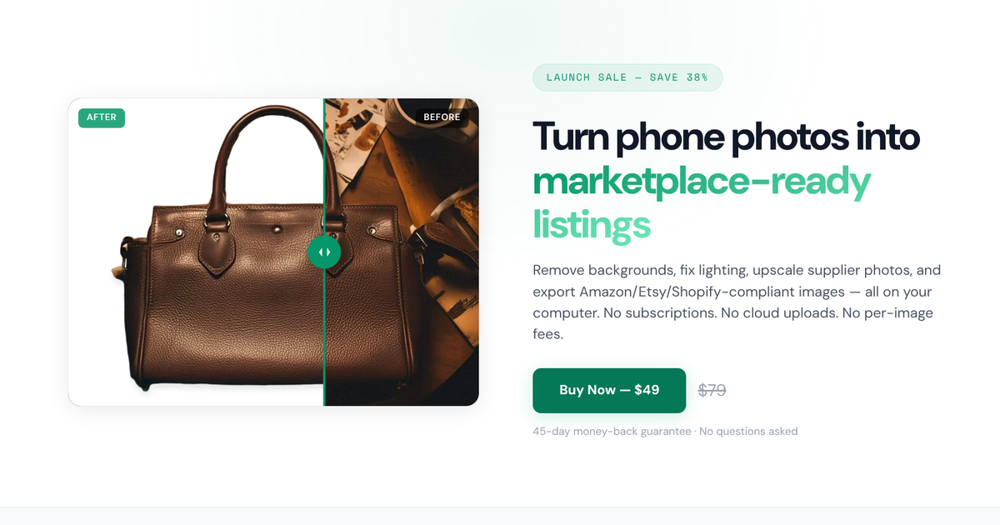

How to Fix Background Removal Mistakes in ListingGems: The Erase and Restore Brush

Background removal is fast, but it's not psychic. It'll keep a slice of the floor under a sneaker, shave a thin strap off a handbag, or eat half a wineglass stem and leave the rest. When that happens, you fix it by hand with the Erase and Restore brush in Studio Mode. Usually takes about a minute.
TL;DR
- Erase (red, shortcut
E) removes pixels from the mask. Restore (green, shortcutR) adds them back. - Each tool has two modes: Brush (paint freely) and Color Select (click a region, scrub tolerance, press Apply). Toggle modes with
S. - In Restore + Color Select the canvas swaps to the original image with removed pixels tinted dark red, so you can see what's actually missing.
- Reset reverts to the auto-generated mask any time. Brush edits don't commit until you export.
When to use Erase vs Restore
Pick the tool based on what went wrong:
- Use Erase when the auto-mask kept something it shouldn't have. A patch of carpet under a shoe. A shadow that survived background removal. A second item in the frame.
- Use Restore when the auto-mask cut into the product itself. A strap that disappeared against a same-colored wall. Glass handles. Fine hair on a stuffed animal.
The toolbar appears in the top-right of the canvas after background removal runs. Click Erase or Restore to start, or press E / R to switch without reaching for the mouse.
Brush vs Color Select: which mode to pick
Once you've chosen Erase or Restore, you have two ways to apply it.
Brush mode is the default. Drag the cursor across the canvas and the mask updates under it, like a paintbrush. Size goes from 2 to 100 px. The cursor outline is red when erasing and green when restoring, so you always know what's about to happen. This is the mode for fine touch-up: hair edges, glass rims, thin straps. A flood fill would either miss those or grab too much.
Color Select is what you want when there's a chunk of mistake. Click a point. ListingGems finds all connected pixels close to that color and shows them as an overlay (red for Erase, green for Restore). A tolerance slider controls how strict the match is, from 0 to 100. Nothing actually changes until you press Apply (or Enter). Cancel (Esc) throws the selection away. Toggle between Brush and Color Select with S.
Walkthrough: erasing an unwanted background object
Say you photographed a watch on a desk, ran background removal, and a triangle of the desk surface is still showing under the strap. Fastest path:
- Click Erase in the toolbar (or press
E). - Switch to Color Select (or press
S). - Click once on the desk patch you want gone. A red overlay appears, covering every connected pixel close to that color.
- Drag the tolerance slider. Lower it if the red is bleeding onto the watch itself, raise it if part of the desk patch isn't covered. The overlay updates as you drag, so you can stop the moment it looks right.
- Press Apply (or Enter). The selected pixels come out of the mask and the canvas updates.
One click won't always catch everything. If there's a separate patch of the same desk on the other side of the watch, click that region and Apply again. Selections stack. The flood fill is contiguous and works in RGB color distance from the click point, so each disconnected region needs its own click.
Walkthrough: restoring a piece that got cut off
Imagine the model erased the thin shoulder strap of a handbag because the strap was the same color as the wall behind it. You want to bring it back.
- Click Restore in the toolbar (or press
R). - Switch to Color Select (or press
S). - The canvas changes. Instead of the masked product on a checker pattern, you see the full original photo, with everything currently outside the mask tinted dark red. That tinted region is "the part the auto-mask removed." That's where your strap is hiding. You can't restore what you can't see, which is why the view switches.
- Click on the strap. It reads as a slightly red-tinted version of its original color. A green overlay appears, covering the connected pixels close to that color, including other parts of the strap with the same tone.
- Drag the tolerance slider until the green overlay covers the whole strap without bleeding into the wall.
- Press Apply. The strap goes back into the mask and the canvas reverts to the normal masked view.
That canvas swap is the part that confuses people on the first try. It happens only in Restore + Color Select. Erase doesn't do it: erasing needs the current mask in view, not the original.
Tips for tricky edges
Color Select handles big regions well. For wisps and edges you'll want the brush, and you'll want it small and zoomed in.
- Zoom in first. Ctrl+scroll to zoom, middle-mouse drag to pan,
0to reset. A percentage indicator and reset button appear on the canvas once you're past 100%. Try doing pixel work at 100% and then at 400% and you'll never go back. - Use a small brush. Drop the size to 5–10 px for hair and glass. Big brushes are for filling regions, not tracing edges.
- Switch tools without leaving Brush mode.
RandEflip between Restore and Erase while you stay in Brush. Useful along a boundary where the auto-mask both added and dropped pixels. - Trust the cursor color. Red outline means you're about to erase, green means restore. If the color doesn't match what you intend, change tools before you click.
- Glass and other transparent materials usually need a mix: restore the rim, erase the interior. A Color Select click on the rim with moderate tolerance often catches the whole outline at once.
Keyboard shortcuts
| Key | Action |
|---|---|
E | Switch to Erase tool |
R | Switch to Restore tool |
S | Toggle between Brush and Color Select mode |
| Enter | Apply the current Color Select preview |
| Esc | Cancel the current Color Select preview |
| Ctrl+scroll | Zoom in and out |
| Middle-mouse drag | Pan the canvas |
0 | Reset zoom to 100% |
+ / - | Zoom in and out without scrolling |
Reset, and what "commit" actually means
The Reset button on the brush toolbar wipes every edit from the current session and restores the auto-generated mask. No confirmation prompt, no undo stack, but also not destructive: brush edits don't overwrite the auto-mask until you export. While you're in Studio Mode, the original ML output is always one Reset away. If you're not sure your edits are an improvement, keep going. If you ruin it, Reset and try again.
Wrapping up
Most cleanups go fast once the keys are in your fingers. Tap E to erase or R to restore, S for Color Select, click the region, Apply. Repeat as needed. For the wisps, zoom in with Ctrl+scroll and use a small brush.
Open Studio Mode on any photo to try it. If you don't have ListingGems yet, you can grab it from the download page, or look at the full feature list first.
Frequently asked questions
The swap is intentional. To restore pixels you need to see what's currently outside the mask, so the canvas shows the full original image with the removed regions tinted dark red. The green overlay on top is exactly what Apply will bring back. Erase doesn't do the swap, because erasing needs the current mask in view, not the original.
Reset wipes the current brush session and reverts to the auto-generated mask. Brush edits aren't baked into anything until you export, so resetting and starting over is always safe. The original auto-mask is always recoverable.
Brush strokes commit immediately, so there's no per-stroke undo. Color Select effectively acts as one for bigger edits, since nothing applies until you press Apply. For a fully clean slate, use Reset to revert to the auto-generated mask and start over.
No. The brush refines an existing mask, so background removal has to run at least once before the toolbar appears. Open a photo in Studio Mode, run the initial removal, then use the brush to clean up the result.